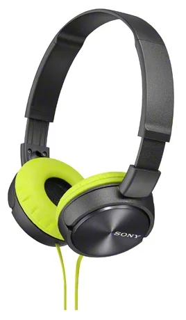

Проводные наушники
Краткое описание товара

Накладные наушники Sony MDR ZX310 одни из немногих, качество которых многократно превышает стоимость. Эту модель нельзя назвать самой лучшей из всех бюджетных, но именно в своей ценовой категории наушники являются лидерами.
Подробное описание товара
Наушники Sony MDR ZX310 – это удобная и практичная модель, которая может похвастаться неплохим звуком. Для тех, кто понимает, что за минимальную цену нельзя получить идеальное звучание, эти наушники станут лучшим приобретением.
К их преимуществам можно отнести:низкую стоимость;
комфортность использования;
хорошую звукоизоляцию;
объемное звучание с выраженными басами;
складывающуюся конструкцию.
В качестве недостатков можно отметить отсутствие яркой детализации и короткий провод. Но на фоне более чем бюджетной цены, эти недостатки просто теряются.
Характеристики товара
| Тип устройства | наушники |
| Конструкция | накладные, закрытые |
| Тип | динамические |
| Диапазон воспроизводимых частот | 10 - 24000 Гц |
| Чувствительность | 98 дБ/мВт |
| Импеданс | 24 Ом |
| Максимальная мощность | 1000 мВт |
| Вес | 125 г |